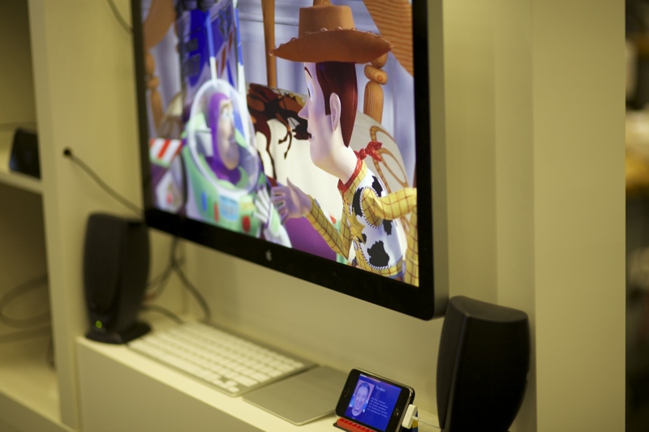

AudioFile overlays imperceptible tones on standard audio tracks to embed digital information that can be decoded by standard mobile devices. AudioFile lets gives users explore their media more deeply by granting them access to a new channel of communication. The project creates sound that is simultaneously meaningful to humans and machines. Movie tracks can be annotated with actor details, songs can be annotated with artist information, or public announcements can be infused with targeted, meaningful data.
This project was done in collaboration Stephanie Su.
Two simple audioCode demos are shown below. One that brings up actor information, ...
... and one that translates public announcements.